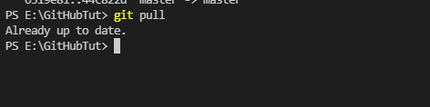

GitHub is a web-based version-control and collaboration platform for software developers.Git is used to store the source code for a project and track the complete history of all changes to that code. It allows developers to collaborate on a project more effectively by providing tools for managing possibly conflicting changes from multiple developers. GitHub allows developers to change, adapt and improve software from its public repositories for free, but it charges for private repositories, offering various paid plans. Each public or private repository contains all of a project's files, as well as each file's revision history. Repositories can have multiple collaborators and can be either public or private.
Following are the Sequential steps for the complete road map of the Git Hub Tutorial:
First of all,you have to create an account on Git Hub
Then Download the Git From Chrome.
Creating a new Repository on github website,The option available on the top right corner of the screen.After that following screen will appear.
Then you unique give the name of the repository and mark them public or private according to your requrement.
after repository creation the following screen will appear
Then you will copy the url from first tab and clone it using command "Git clone (URL)" where you want to locate your folder locally.
Create a new file and add something in it then show the status of the file by using "git status" it will show that your file is untracked, not commit the changes changes
Use the "git add FileName" Command or "git add ." enter the file/files that you created into the stagging area.and after that also check the status.
After adding we use git commit command with some message to commit the changes in the git hub Syntax "git commit –m “Message”"
Now we committed the changes. But these changes are not visible online. The reason is that we have to push the repo. So enter "git push" command. Now you can see changes on Github repo also.
The "git pull" command is used to fetch and download content from a remote repository and immediately update the local repository to match that content.
"Git log" tool to review and read history of everything in repository.
GIT BRANCH command lets you create, list, rename, and delete branches. It doesn't let you switch between branches or put a forked history back together again. The git checkout – b “name” command is used to create new branch. "Git branch" show the list of branch."git checkout name" command is used to change the branch. "Git merge" is used to merge branches."git branch –D name" is used to delete the branch.